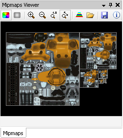

The Mipmaps Viewer displays the currently selected texture from the Textures Browser.

Mouse controls:
• To pan the texture, drag with the left mouse button.
• To zoom the texture, drag with the right mouse button.
Toolbar options:
[] Show color channels
[] Show alpha channel
[] Zoom in
[] Zoom out
[] Zoom to actual size
[] Zoom to fit
[] Replace mipmap levels with solid colors
• When this option is enabled, the Scrubber renders the scene with the replacement texture data.
• To revert back to the original texture, click again on this toolbar button.
• Alternatively, revert by clicking on the status icon in the Texture Browser.
[] Replace texture with an image loaded from a file
• Disable this override in the same ways as for the solid color mipmap replacement.
[] Export a copy of the texture to disk